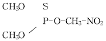
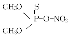
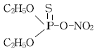
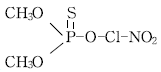
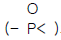
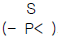
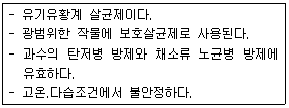

식물보호기사 (2007-05-13 기출문제)
1과목: 식물병리학
1. 다음 중 세균에 의한 병은?
- 도열병
- 벼 키다리병
- 줄무늬잎마름병
- 벼 흰잎마름병
(정답률: 72%)

2. 벼 잎집무늬마름병균은 분류학상 어떤 균류에 속하는가?
- 조균
- 불완전균
- 자낭균
- 담자균
(정답률: 58%)
3. 오동나무 빗자루병을 매개하는 해충은?
- 복숭아혹진딧물
- 담배장님노린재
- 애멸구
- 흰불나방
(정답률: 76%)
4. 다음 중 다범성(多犯性, polyxenic)인 것은?
- 딸기 잿빛곰팡이병균
- 보리 겉깜부기병균
- 밀 줄기녹병균
- 호박 흰가루병균
(정답률: 58%)
5. 식물 바이러스병에 걸린 세포내에 X체(X-body)인 특이소체 유무를 관찰하는 진단법은?
- 육안적 진단
- 해부학적 진단
- 이화학적 진단
- 혈청학적 진단
(정답률: 65%)
6. 후벽포자에 의하여 월동을 하는 병원균은?
- fusarium oxysporum
- phoma betae
- cercospora kikuchii
- erysiphe graminis
(정답률: 85%)
7. 사과나무 부란병균의 월동처는?
- 병환부의 주지
- 낙엽진 병엽
- 낙과 혹은 병과
- 토양
(정답률: 66%)
8. 어떤 작물 품종의 병 저항성이 이병성으로 역전하는 주요원인은?
- 재배법의 변경
- 기상 환경의 이변
- 방제 작업의 중단
- 병원균의 새로운 race 출현
(정답률: 95%)
9. 담배 모자이크바이러스를 Nicotiana Glutinosa의 잎에 접종했을때 나타나는 병징은?
- 식물체 전체의 잎에 모자이크 증상
- 접종된 잎에 국부괴사반점, 상위 잎에 모자이크 증상
- 접종된 잎에만 국부괴사반점 증상
- 접종된 잎뿐 아니라 모든 잎에 국부괴사반점증상
(정답률: 73%)
10. 식물 병원 세균 중 육즙한천배양기상에서 황색 취락을 형성하는 균으로 가장 적합한 것은?
- Pseudomonas
- Xanthomonas
- Agrobacterium
- Erwinia
(정답률: 74%)
11. 벼 키다리병의 병징은 병원균이 분비하는 무엇 때문인가?
- 기주 특이성 독성 물질(toxin) 때문이다.
- 영양 물질(nutrient)에 의한 세포분열 때문이다
- 효소(enzyme) 때문이다.
- 생장조절물질(ga) 때문이다.
(정답률: 95%)
12. 병 저항성에 의한 방제법의 설명으로 옳은 것은?
- 병 저항성에 의한 방제시 재배자의 경제 부담이 크게 증가한다.
- 한 번 육성된 품종의 병 저항성은 영원히 지속된다.
- 식물병 중 저항성 품종 재배 외에 다른 방제법으로는 방제효과를 얻기 어려운 것도 있다.
- 모든 병에 대해 병 저항성 품종을 육성할 수 있다.
(정답률: 85%)
13. 다음 중 종자전반 되는 것은?
- 보리 흰가루병
- 토마토 배꼽썩음병
- 벼 키다리병
- 밀 줄기녹병
(정답률: 83%)
14. 모잘록병원균 중 Pythium은 어떤 균류에 속하는가?
- 자낭균류
- 불완전균류
- 난균류
- 담자균류
(정답률: 45%)
15. 품종과 레이스 사이에 특별한 유전자 대 유전자의 상호작용이 존재하는 저항성으로 품종 고유의 소수 주동유전자에 의하여 발현되어 재배 환경 등의 영향을 받기 어려운 저항성은?
- 확대저항성
- 감염저항성
- 침입저항성
- 진정저항성
(정답률: 73%)
16. 곰팡이의 분화형을 뜻하는 용어는?
- isolate
- strain
- pathovar
- forma specialis
(정답률: 64%)
17. 발병억제토양이 가지고 있는 발병 억제력의 가장 주된 실체는?
- 무기염류
- 토양의 물리성
- 길항균
- 토양의 종류
(정답률: 86%)
18. 파이토플라스마에 의해서 발생하는 병은?
- 보리 황화위축병
- 벚나무 빗자루병
- 오동나무 빗자루병
- 벼 누른오갈병
(정답률: 90%)
19. 다음 중 토양전염을 할 수 있는 바이러스는?
- cucumber mosaic virus
- potato virus Y
- potato mop-top virus
- radish enation mosaic virus
(정답률: 63%)
20. 다음 중 물에 의해서 주로 전염되는 병은?
- 감자역병
- 벼 잎집무늬마름병
- 맥류 붉은곰팡이병
- 오이 노균병
(정답률: 54%)
2과목: 농림해충학
21. 다음 중 성충이 과일에 상처를 내서 해를 미치는 것은?
- 으름나방
- 모무늬잎말이나방
- 사과굴나방
- 사과응애
(정답률: 63%)
22. 다음 중 메뚜기 큰턱의 운동을 지배하는 신경의 중추는?
- 식도하신경절
- 제3대뇌
- 후대뇌
- 전대뇌
(정답률: 79%)
23. 윤작으로 방제 효과를 거두기 가장 어려운 해충은?
- 식성의 범위가 좁은 해충류
- 바이러스를 옮기는 해충류
- 이동성이 적은 해충류
- 생활사가 긴 해충류
(정답률: 53%)
24. 다음 해충 중 광식성(polyphagous)을 가진 것은?
- 솔잎혹파리
- 벼멸구
- 사과혹진딧물
- 흰불나방
(정답률: 79%)
25. 배자의 내배엽이 생성하는 구조는
- 근육
- 심장
- 중장
- 전장
(정답률: 78%)
26. 담배나방에 대한 설명 중 틀린 것은?
- 고추, 담배에 큰 피해를 준다.
- 유충기간은 5일 정도이다.
- 땅속에서 번데기로 월동한다.
- 성충의 암컷은 밤에만 활동한다.
(정답률: 46%)
27. 해충의 피해량을 결정하는 요인이 아닌 것은?
- 해충의 수
- 가해시기
- 작물의 상태
- 기상상태
(정답률: 56%)
28. 다음 중 누에의 휴면호르몬을 합성하는 곳은?
- 신경분비 세포
- 알라타체
- 카디아카체
- 앞가슴샘
(정답률: 45%)
29. 딱정벌레목이 다른 곤충의 목(目)과 쉽게 구분될 수 있는 특징은?
- 머리는 전구식이다.
- 시초(elytra)라는 앞날개를 갖고 있다.
- 완전 변태 또는 불완전 변태를 한다.
- 번데기는 대부분 피용이다.
(정답률: 70%)
30. 완전변태를 하는 곤충 중 유충이 다형(多型)현상을 나타내는 것을 과변태(過變態)라고 하는데, 다음 중 과변태를 하는 대표적인 곤충이 속하는 것은?
- 파리목
- 풍뎅이과
- 가뢰과
- 날도래목
(정답률: 86%)
31. 곹충 체벽의 진피층(epidermis)에 대한 설명 중 틀린 것은?
- 단층으로 되어 있다.
- 표면에는 미세한 융모가 나 있다.
- 단백질, 지질, 키틴 화합물을 합성한다.
- 외표피와 원표피로 구성되어 있다.
(정답률: 61%)
32. 생물적 방제의 설명으로 잘못된 것은?
- 거의 모든 해충에 유효하며 특히 대발생을 속효적으로 억제하는 데 더욱 효과가 크다.
- 인축, 야생동물, 천적 등에 위험성이 적다.
- 생물상의 평형을 유지하여 생태계가 안정된다.
- 효과 발현까지는 시간이 걸리지만 효과의 지속기간이 거의 영구적이다.
(정답률: 82%)
33. 성충이 우화하여 공중으로 날면서 알을 떨어뜨리는 해충은?
- 흰불나방
- 텐트나방
- 박쥐나방
- 짚시나방
(정답률: 72%)
34. 소나무굴깍지벌레의 특성으로 옳은 것은?
- 1년에 1회 발생한다.
- 1년에 2회 발생한다.
- 알로 월동한다.
- 가지나 줄기에서 즙액을 빨아먹는다.
(정답률: 26%)
35. 유충이 몇 개의 벼 잎을 끌어 모아 철하고 그 속에 숨어 있다가 해진 후에 나와서 벼 잎을 잎가에서 부터 먹어 들어가 주맥만 남기는 해충은?
- 줄점팔랑나비
- 벼애나방
- 혹명나방
- 벼잎벌레
(정답률: 73%)
36. 수생곤충 중 죽은 생물을 먹어 분해자의 역할을 하는 것은?
- 하루살이
- 강도래
- 날도래
- 잠자리
(정답률: 44%)
37. 곤충에서 혈장의 기능으로 잘못 설명된 것은?
- 세포, 조직 및 기관간의 물질교환을 도와주는 수송역할을 한다.
- 물질들의 저장고 역할을 한다.
- 혈림프의 이온조성과 삼투압조절 기능을 담당한다.
- 물리적인 성질로 몸 한 부위의 압력이나 열을 다른 부위로 전파시킨다.
(정답률: 47%)
38. 곤충의 방어물질에 대한 설명으로 틀린 것은?
- 곤충의 방어샘에서 동정된 화합물로는 알칼로이드, 테로페노이드, 퀴논, 페놀 등이 있다.
- 사회성 곤충에서는 독샘에서 분비하는 방어물질들이 대부분 효소들이다.
- 곤충의 방어물질을 총칭 카이로몬이라고 한다.
- 비사회성 곤충에서는 방어물질 중에 개미들의 경보 페르몬과 같거나 비슷한 구조의 화합물도 있다.
(정답률: 86%)
39. 다음 중 곤충강으로 분류되지 않는 것은?
- 잠자리
- 꿀벌
- 벼물바구미
- 지네
(정답률: 83%)
40. 다음 중 생태적(경종적) 방제법으로 가장 거리가 먼 것은?
- 윤작
- 침수법
- 재식밀도의 조절
- 잠복소의 제공
(정답률: 54%)
3과목: 재배학원론
41. 볍씨의 휴면을 유기하는 물질은 어디에 있는가?
- 왕겨
- 배젖
- 배
- 유엽
(정답률: 53%)
42. 일장처리로 개화기를 조절하는 방법은 다음 중 주로 어떤 육종법에서 이용되는가?
- 교잡육종법
- 분리육종법
- 도입육종법
- 유전공학 이용법
(정답률: 32%)
43. 벼 생육기간 중 냉해에 가장 약한 시기는 ?
- 감수분열기
- 등숙기
- 분얼기
- 유묘기
(정답률: 85%)
44. 다음 중 산성토양에 가장 약한 작물로 나열된 것은?
- 콩,팥
- 땅콩,콩
- 팥,유채
- 유채,양배추
(정답률: 69%)
45. 가뭄은 토양수분의 부족에 의해서 유발된다. 밭에서의 가뭄 대책이 아닌 것은?
- 뿌림골을 낮게 한다.
- 뿌림골을 넓히거나 재식밀도를 촘촘하게 한다.
- 봄철 보리밭을 밟아 준다.
- 가뭄에 견디는 작물과 품종을 선택한다.
(정답률: 75%)
46. 필수원소는 아니지만 벼와 같은 화곡류에 그 함량이 극히 많은 성분은 ?
- 질소
- 규소
- 칼슘
- 칼륨
(정답률: 81%)
47. 작물의 엽록소 형성에 관여하며, 결핍되면 황백화 현상이 일어난다. 또한 망간(Mn)이 과잉하면 결핍을 초래하는 원소는?
- 칼슘(Ca)
- 아연(Zn)
- 인산(P)
- 철(Fe)
(정답률: 71%)
48. 토양유기물(有機物)의 주된 기능과 거리가 먼 것은?
- 입단의 형성조장
- 완충능의 저하
- 보수 및 보비력의 증대
- 미생물의 번식조장
(정답률: 85%)
49. [(A X B) X B] X B와 같은 교잡에서 내병성을 A형질에서 B형질로 옮기려 할 때 쓰는 육종방법은?
- 다계교잡법
- 여교잡법
- 파생계통육종법
- 집단육종법
(정답률: 85%)
50. 작물의 수정 및 종자 형성에 대한 설명으로 옳은 것은?
- 종자에서 배와 종피는 유전적 조성이 같다.
- 정세포와 2개의 극핵이 결합하여 배유를 형성한다.
- 정세포와 반족세포가 결합하여 배를 형성한다.
- 정세포 2개와 난세포가 결합하여 배를 형성한다.
(정답률: 65%)
51. 일반 대기 중의 CO2 함량은?
- 30%
- 3%
- 0.3%
- 0.03%
(정답률: 72%)
52. 다음 중 종자의 수명이 가장 작은 작물은?
- 배추
- 완두
- 메밀
- 녹두
(정답률: 50%)
53. 다음 중 비료의 엽면흡수에 미치는 요인에 대한 설명으로 옳은 것은?
- 낮보다 밤에 더 잘 흡수된다.
- 잎의 호흡작용이 저조할 때 더 잘 흡수된다.
- 잎의 표면보다 이면에서 더 잘 흡수된다.
- 살포액의 pH가 약알칼리성인 것이 흡수가 잘 된다.
(정답률: 78%)
54. 화곡류의 채종재배시 수확의 적기는?
- 유숙기
- 황숙기
- 완숙기
- 고숙기
(정답률: 59%)
55. 식물의 굴광현상에 가장 유효한 광파장은?
- 350mm
- 450mm
- 550mm
- 650mm
(정답률: 85%)
56. 간척지 벼 재배시 일반적으로 재배는 가능하나 염해가 발생할 우려가 있는 염분 농도는?
- 0.001%
- 0.01%
- 0.1%
- 1%
(정답률: 61%)
57. 농가에 보급하기 위한 채종포에서 사용하는 종자는?
- 기본식물종자
- 원원종
- 원종
- 보증종자
(정답률: 71%)
58. 다음 중 풍해에 가장 강한 작물은?
- 고구마
- 벼
- 콩
- 옥수수
(정답률: 82%)
59. 중북부지방의 맥류재배에서 한해와 동해를 방지할 목적으로 실시되는 작휴법은?
- 성휴법
- 이랑재배
- 휴립휴파법
- 휴립구파법
(정답률: 58%)
60. 작물의 수해에 대하여 올바르게 기술한 것은?
- 피,수수, 옥수수 등은 수해에 강한 작물이다.
- 수온이 낮으면 높을 때보다 피해가 크다.
- 수해 상습지에서는 질소비료를 증시한다.
- 벼의 분얼기가 수잉기보다 수해피해가 심하다.
(정답률: 79%)
4과목: 농약학
61. 다음 중 카바메이트계 농약은?
- 스미치온(메프)
- 밧사(BP)
- 루페누론
- 빔(트리졸)
(정답률: 61%)
62. 피레트린의 협력제로 사용되어 살충력을 증강시키는 작용을 하는 것으로 가장 옳은 것은?
- 피페로닐 부톡사이드
- 벤토나이트
- 구사티온(아진포)
- 스프라사이드
(정답률: 58%)
63. 다음 제충국의 유효성분중 집파리에 대한 독성이 가장 큰 것은?
- 피레트린Ⅰ
- 피레트린Ⅱ
- 시네린Ⅰ
- 시네린Ⅱ
(정답률: 60%)
64. 다음 중 파라치온의 구조식은?




(정답률: 50%)
65. BHC제 중 살충력이 가장 강한 r - BHC 의 광학적 제법에 있어서 가장 적당한 빛의 파장은?
- 100~300mm
- 300~500mm
- 500~700mm
- 700~900mm
(정답률: 68%)
66. 살충제 저항성의 효과적인 방제 대책이 아닌 것은?
- 과도한 살충제의 사용과 동일 약제의 연속 사용을 피한다.
- 살충기작이 같은 약제를 교호 사용한다.
- 살충력의 상승효과를 이용한 혼합제를 이용한다.
- 화학적 방제와 생물학적 방제를 이용한 종합적 방제 대책을 수립 한다.
(정답률: 88%)
67. 유기인계 살충제에 있어서 인산기

의 화합물과 티오인산기
의 화합물에 대한 설명으로 옳은 것은?- 인산기의 화합물이 티오인산기의 화합물보다 생리적 작용이 강하다.
- 인산기의 화합물이 티오인산기의 화합물보다 안정하다.
- 두 화합물 모두 생리적 작용 및 안정성이 같다.
- 인산기의 화합물이 티오인산기의 화합물보다 안정하나 생리적 작용은 낮다.
(정답률: 59%)
68. 보르도액에 대한 설명 중 옳지 않은 것은?
- 원료의 순도는 황산구리 98.5%, 생석회 90%이상 이어야 품질이 좋은 액이 된다.
- 조제 시 금속제 용기를 사용하면 좋지 않다.
- 황산구리 용액을 세게 저으며 석회유를 소량씩 부어야 품질이 좋은 액이 된다.
- 조제된 보르도액의 액성은 알칼리성이고 조제 즉시 사용하여야 한다.
(정답률: 79%)
69. 아이비(IB)유제 48% 100mL를 0.5%의 희석액으로 만드는데 소요되는 물의 양은 몇 mL 인가? (단, 아이비(IB)유제의 비충은 1.0⑤ 이다.)
- 9247.5
- 9347.5
- 9447.5
- 9547.5
(정답률: 73%)
70. 보리겉깜부기병의 종자소독에 가장 효과적인 약제는?
- 지네브제
- MAFA제
- 캡탄제
- 카아복신제
(정답률: 50%)
71. 계면활성제 중 가용화 작용이 큰 HLB(hydrophile-lipophilebalance) 값으로 가장 옳은 것은?
- 1 ~3
- 4 ~7
- 9 ~12
- 15 ~18
(정답률: 49%)
72. 다음 중 요소계 제초제는?
- 아파론
- 2,4-D
- 벤설라이드
- 론스타
(정답률: 63%)
73. 분제(입제포함)의 물리적 성질로서 가장 거리가 먼 것은?
- 현수성
- 비산성
- 부착성
- 토분성
(정답률: 80%)
74. 무색 바늘모양의 결정으로 과수, 화초 등의 삽목 때 발근 촉진제로 주로 쓰이는 것은?
- 포스톤
- 지베렐린
- ß-인돌초산
- 카시네린
(정답률: 61%)
75. 다음 보기에서 설명하는 농약은?

- 만코지 수화제
- 클로르훼나피르 수화제
- 알파스린 유제
- 메치온 유제
(정답률: 67%)
76. 계면활성제를 구성하는 주요 원자단 중 친수성(hydrophilic)을 갖는 원자단이 아닌 것은?
- -CH2OR
- -OH
- -COOH
- -CN
(정답률: 63%)
77. 농약잔류허용기준을 설정하는 과정에서 고려할 사항으로 가장 거리가 먼 것은?
- 최대무작용량(NOEL)
- 1일 섭취허용량(ADI)
- 안전계수
- 식이섭취위험도
(정답률: 78%)
78. 수확기의 농산물 중 농약의 잔류량이 잔류허용기준을 초과하지 않도록 하기 위하여 작물별로 농약의 살포횟수와 수확 전 최종 살포시기(일수)를 제한하는 기준을 무엇이라고 하는가?
- 농약 안전사용기준
- 농약 잔류허용기준
- 농약 취급제한기준
- 농약 안전관리기준
(정답률: 61%)
79. 다음 중 농약독성의 발현시기에 따른 구분이 아닌 것은?
- 급성독성
- 흡입독성
- 아급성독성
- 만성독성
(정답률: 73%)
80. 농약의 약효를 높이기 위한 방법으로 가장 거리가 먼 것은?
- 알맞은 농약의 선택
- 방제 적기에 농약살포
- 적정농도, 정량살포
- 한 가지 농약의 집중사용
(정답률: 91%)
5과목: 잡초방제학
81. 벼와 피의 형태적 차이점은?
- 피에는 잎귀만 있고 벼에는 잎혀만 있다.
- 벼에는 잎귀와 잎혀가 있으나 피에는 없다.
- 피에는 잎귀와 잎혀가 있으나 벼에는 없다.
- 벼에는 잎귀는 있으나 잎혀가 없다.
(정답률: 80%)
82. 논잡초의 군락천이를 유발시키는 원인과 가장 관계 깊은 것은?
- 춘.추경을 많이 하기 때문
- 동일한 제초제의 연속적인 사용 때문
- 담수조건하에서 재배하기 때문
- 기계이앙이 증가되었기 때문
(정답률: 80%)
83. 광발아 잡초들로만 짝지어 있는 것은?
- 바랭이, 냉이, 별꽃
- 왕바랭이, 별꽃, 소리쟁이
- 바랭이, 쇠비름, 개비름
- 향부자, 독말풀, 별꽃
(정답률: 72%)
84. 잡초가 작물보다 경쟁에서 유리한 이유를 설명한 것 중 틀린 것은?
- 가벼운 종자를 다량 생산하기 때문이다.
- 불량한 환경조건에 적응력이 높기 때문이다.
- 번식능력이 높고 다양하기 때문이다.
- 휴면성이 결여되어 있기 때문이다.
(정답률: 84%)
85. 다음 중 광요구성 제초제가 아닌 것은?(오류 신고가 접수된 문제입니다. 반드시 정답과 해설을 확인하시기 바랍니다.)
- Linuron
- Oxadiazon
- Butachlor
- Oxyfluorfen
(정답률: 48%)
86. 잡초방제용으로 가장 효과적인 비닐의 종류는?
- 검정색 비닐
- 흰색비닐
- 적색 비닐
- 파란색 비닐
(정답률: 84%)
87. 제초제의 토양내 지속성과 관계가 가장 적은 것은?
- 미생물 및 화학적 분해
- 광분해 및 휘발성
- 경운 및 정지
- 토양에 흡착 및 용탈
(정답률: 72%)
88. 다음 중 이행형 제초제가 아닌 것은?
- Paraquat
- Glyphosate
- 2, 4-D
- Simazine
(정답률: 48%)
89. 다음 중 잡초의 해가 아닌 것은?
- 토양 침식
- 물, 광성, 영양분 경합
- 농작물의 품질저하
- 병충해 서식지
(정답률: 83%)
90. 10%용액은 살포용액 100mL 안에 2,4-D 10g이 포함되어 있는 것을 의미하는데 이를 ppm으로 환산하면?(단, 용액의 비중은 1이다.)
- 100000ppm
- 10000ppm
- 1000ppm
- 100ppm
(정답률: 55%)
91. 다음 중 겨울잡초들로만 짝지어진 것은?
- 냉이, 뚝새풀, 피
- 점나도나물, 벼룩이자리, 벼룩나물
- 뚝새풀, 비름, 별꽃아재비
- 벼룩나물, 냉이, 쇠비름
(정답률: 67%)
92. 다음 중 우리나라에서 개발된 최초의 제초제는 ?
- pyrazolate
- pyrazoxyfen
- pyribenzoxim
- 2,4-D
(정답률: 39%)
93. 다음 중 문제잡초의 분포비율이 가장 많은 과로만 묶인 것은?
- 가지과, 화본과
- 화본과, 국화과
- 화본과, 십자화과
- 국화과, 비름과
(정답률: 80%)
94. 다음의 잡초방제 방법 중 오늘날 가장 널리 행해지고 있는 것은?
- 예방적 방제법
- 물리적 방제법
- 생물적 방제법
- 화학적 방제법
(정답률: 74%)
95. 작물 수량을 기준해 볼 때 언제 잡초를 방제하는 것이 가장 합리적인가?
- 잡초와 작물간의 경합 한계기간 이후에
- 작물의 초관이 완전히 형성된 이후부터 수확기 사이에
- 작물의 생식생장 직전에
- 잡초와 작물과의 경합이 일어나기 이전에
(정답률: 63%)
96. 다음 경합의 유형을 설명한 것 중 옳은 것은?
- 종내경합은 종간경합에 비해 경합양상이 치명적이다.
- 농경지에서 종내경합은 흔히 잡초에서 볼 수 있다.
- 종간경합은 경합을 최대화 하려는 경향이 있다.
- 종간경합은 초기경합이 빨라지고 경합량도 증가된다.
(정답률: 52%)
97. 식물 표면에서 제초제의 흡수과정과 관련된 설명으로 틀린 것은?
- 친유성(비극성) 제초제는 큐티클 납질층을 친수성 보다 잘 통과한다.
- 친수성(극성) 제초제의 통과는 펙틴이 높고 다음이 큐틴이며 납질은 통과가 어렵다.
- 셀룰로오스층은 촘촘하여 비극성 및 극성 제초제 모두 투과가 어렵다.
- 계면활성제는 극성 제초제가 큐티클 납질층을 잘 통과하도록 도와준다.
(정답률: 70%)
98. 다음 중 괴경으로 번식하는 다년생 잡초는?
- 사마귀풀
- 물달개비
- 올방개
- 알방동사니
(정답률: 72%)
99. 벼와 잡초의 경합에서 가장 불리한 재배법은?
- 무경운 직파재배
- 어린 모 기계이앙
- 중묘 기계이앙
- 무 경운 기계이앙
(정답률: 79%)
100. 제초제의 분류에서 처리방법에 따른 분류로 틀린 것은?
- 토양처리 제초제
- 중기처리 제초제
- 비선택성 제초제
- 경엽처리 제초제
(정답률: 72%)